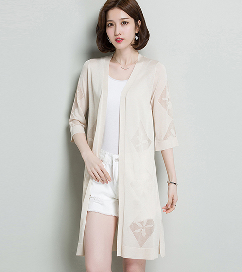
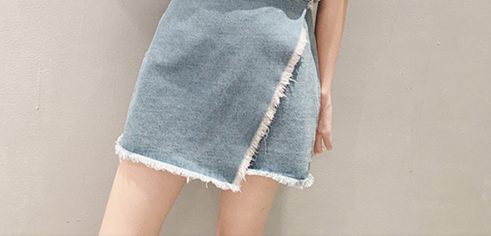
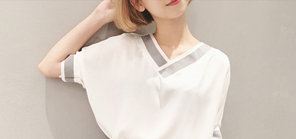
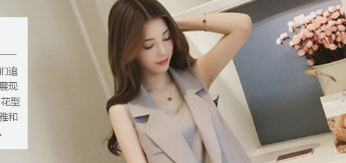

首页
关于我们
产品展示
设计团队
新闻动态
首页：
关于我们
发展历程
关于我们
发展历程
品牌简介
2018 5
2018年的5月，影视明星刘涛正式成为安正时尚 集团旗下主力品牌Z玖姿的首位品牌形象代言人；在签约 仪式当天，刘涛身穿玖姿2018秋冬秀场同款亮相，坚定利落的简约 风格与刘涛特有的优雅气质完美融合。
2018 2 26
2018年2月26日，作为米兰时装周官 方唯一邀请的中国商业女装品牌玖姿压轴亮相2 018F/W米兰时装周，在国际时尚之都米兰，以“中国姿造MAD E BY JUZUI"主题发布2018秋冬新品，作为修饰中国女性身形的 时尚专家，用不变的裁缝初心展现每位女性的优美曲线和 自信光芒，发布会现场，知名女演员刘涛身着Z玖姿格纹套 装优雅出席，共赴盛会。
2017 2 14
2017年2月14日安正时尚集团 股份有限公司（股票简称：安正时尚，股票代码603839）股票 在上海证券交易所上市，高圆圆身着“JZ玖姿”定制款服装出席。
2018 2 26
集团旗下品牌FIONA CHEN（斐娜晨）以 “消失的动物”为灵感，于中国国际时装周拉开 品牌2017春夏时装大秀

设计理念
DESIGN CONCEPT
秉承“塑形、优雅、大气、经典、时尚”的设计理念，运用优质上等的面料精致的细节装饰、优雅的色彩和图案，加上时尚的设计和巧妙的剪裁，勾勒出女性的线条美感，妆点现代都市女性的多彩生活。
品牌理念
BRAND CONCEPT
追求时尚、精致与实用美学的完美平衡，通过对国际流行趋势与女装市场的深入研究，整合国际、国内尖端时尚资源，融汇贯通，倾心专注精彩演绎现代都市女性的自信、优雅、女人味。
品牌文化
BRAND CULTURE
定位于追求优雅含蓄、融入温柔婉约、崇尚完美精致生活的都市白领女性，她们追求品质与时尚但绝不随波逐流，习惯被人关注和宠爱、她们的优雅气质让她们展现出属于玖姿女性独有的魅力风尚.传承意大利风情，采用精美绝伦的立体剪裁，花型组合与材质拼接，并选用欧洲当季最流行的高级面料，将意大利时装的精致优雅和浪漫热情完美融合在一起。完美缔造出中国女性优雅、知性、时尚的服饰经典。
  
COPYRIGHT ●2014 GIRDEAR ALL RIGHTS RESERVED 版权所有：浙江印象实业股份有限公司浙ICP备15046969号